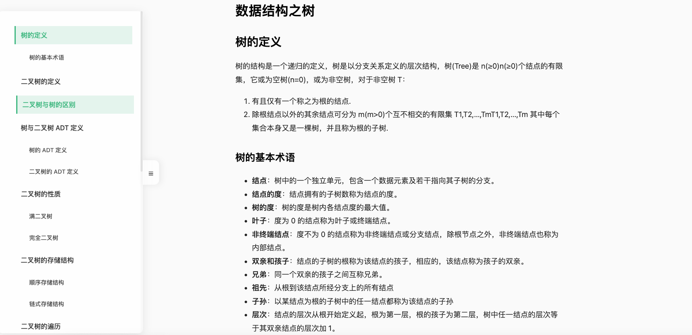
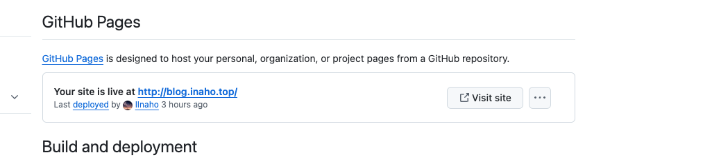

hugo 使用 链接到标题
时隔四年，重新搭起个人博客。
网站从当初的 hexo 换为了 hugo 搭建，使用 hugo-coder 作为主题，进行了部分魔改。
hugo 安装 链接到标题
由于博主使用的 manjaro 系统作为日常开发、办公系统，可以使用 yay 直接进行安装
yay -S hugo
如果使用其他操作系统，可以参考 hugo 官方安装教程 进行安装
hugo 基础命令 链接到标题
首先学习下 hugo 的部分命令
hugo version # 查看版本
hugo new site myblog # 创建目录结构
# 更改主题
cd myblog
git init
git submodule add https://github.com/luizdepra/hugo-coder.git themes/hugo-coder
echo "theme = 'hugo-coder'" >> hugo.toml
创建新文章
hugo new content content/posts/my-first-post.md
启动服务
# 启动服务
hugo serve --disableFastRender
可以通过 127.0.0.1:1313 端口访问本地博客，对于文档的更新，支持实时渲染
twikoo 评论系统 链接到标题
接下来介绍一下魔改部分， 首先 hugo-coder 自身没有支持 twikoo 评论系统，依照 twikoo 官方文档
首先需要搭建 twikoo 后端服务
- 搭建 mongodb 云数据库
- 搭建 twikoo 后端服务，并且连接云数据库
为此，我使用了官方文档推荐的 mongodb 云服务 和 netlify 来搭建
可以参考官方的 netlify 部署方式
搭建完成后，便可以在主题路径 themes/hugo-coder/layouts/partials/posts 下新建文件 twikoo.html，内容如下
<script src="https://cdn.jsdelivr.net/npm/twikoo@1.6.41/dist/twikoo.all.min.js"></script>
<div id="tcomment"></div>
<style>
.twikoo {
background-color: var(--card-background);
border-radius: var(--card-border-radius);
box-shadow: var(--shadow-l1);
padding: var(--card-padding);
}
:root[data-scheme="dark"] {
--twikoo-body-text-color-main: rgba(255, 255, 255, 0.9);
--twikoo-body-text-color: rgba(255, 255, 255, 0.7);
}
.twikoo .el-input-group__prepend,
.twikoo .tk-action-icon,
.twikoo .tk-submit-action-icon,
.twikoo .tk-time,
.twikoo .tk-comments-no,
.twikoo .tk-comments-count {
color: var(--twikoo-body-text-color);
}
.twikoo .el-input__inner,
.twikoo .el-textarea__inner,
.twikoo .tk-preview-container,
.twikoo .tk-content,
.twikoo .tk-nick,
.twikoo .tk-send {
color: var(--twikoo-body-text-color-main);
}
.twikoo .el-button {
color: var(--twikoo-body-text-color) !important;
}
.twikoo .el-input__count {
color: var(--twikoo-body-text-color) !important;
}
.OwO .OwO-body {
background-color: var(--body-background) !important;
color: var(--body-text-color) !important;
}
</style>
{{- with .Site.Params.twikoo -}}
<script>
twikoo.init({
envId: 'https://xxxxxx.app/.netlify/functions/twikoo',
el: '#tcomment', // 容器元素
})
</script>
{{- end -}}
修改 themes/hugo-coder/layouts/posts/single.html 文件， 在底部<footer>标签内，增加一行
<footer>
{{ partial "posts/series.html" . }}
{{ partial "posts/twikoo.html" . }}
....
</footer>
到此，文章底部已经可以使用 twikoo 系统进行评论了
添加数学公式支持 链接到标题
由于我的一部分技术文章会写一些数学公式，准备使用 mathjax 支持对数学公式的渲染。
因此需要手动添加这部分功能
在路径 themes/hugo-coder/layouts/partials/head 下新建文件 mathjax.html， 内容如下
<script type="text/javascript"
async
src="https://cdn.bootcss.com/mathjax/2.7.3/MathJax.js?config=TeX-AMS-MML_HTMLorMML">
MathJax.Hub.Config({
tex2jax: {
inlineMath: [['$','$'], ['\\(','\\)']],
displayMath: [['$$','$$'], ['\[\[','\]\]']],
processEscapes: true,
processEnvironments: true,
skipTags: ['script', 'noscript', 'style', 'textarea', 'pre'],
TeX: { equationNumbers: { autoNumber: "AMS" },
extensions: ["AMSmath.js", "AMSsymbols.js"] }
}
});
MathJax.Hub.Queue(function() {
// Fix <code> tags after MathJax finishes running. This is a
// hack to overcome a shortcoming of Markdown. Discussion at
// https://github.com/mojombo/jekyll/issues/199
var all = MathJax.Hub.getAllJax(), i;
for(i = 0; i < all.length; i += 1) {
all[i].SourceElement().parentNode.className += ' has-jax';
}
});
</script>
<style>
code.has-jax {
font: inherit;
font-size: 100%;
background: inherit;
border: inherit;
color: #515151;
}
</style>
<script src="//yihui.org/js/math-code.js" defer></script>
<script defer
src="//mathjax.rstudio.com/latest/MathJax.js?config=TeX-MML-AM_CHTML">
</script>
在文件 themes/hugo-coder/layouts/partials/head.html 的底部添加
{{ partial "head/mathjax.html" . }}
自此，数学公式可以正确渲染，但这中间遇到了一个问题，如果公式包含三个以上大括号，会出现渲染问题。
经过互联网查询，参考了 这位大佬的 方案 ， 添加了如下代码
<script src="//yihui.org/js/math-code.js" defer></script>
<script defer
src="//mathjax.rstudio.com/latest/MathJax.js?config=TeX-MML-AM_CHTML">
</script>
但是依照他的方案，需要在公式前后用 `` 标注
在文章头部添加字数统计 链接到标题
hugo 框架提供了一些函数调用，使得可以轻松获取文章的统计字数。
在文件 themes/hugo-coder/layouts/posts/single.html 的标签<div class="post-meta">底部添加一个 span 来实现
<div class="post-meta">
<div class="date">
<span class="posted-on">
<i class="fa-solid fa-calendar" aria-hidden="true"></i>
<time datetime="{{ .Date.Format "2006-01-02T15:04:05Z07:00" }}">
{{ .Date | time.Format (.Site.Params.dateFormat | default "January 2, 2006" ) }}
</time>
</span>
<span class="reading-time">
<i class="fa-solid fa-clock" aria-hidden="true"></i>
{{ i18n "reading_time" .ReadingTime }}
</span>
<span class="post-word-count">
<i class="fa fa-pie-chart" aria-hidden="true" style="margin-left: 10px;"></i>
{{ .WordCount }} 字数
</span>
</div>
添加目录侧边栏 链接到标题
由于 hugo 主题没有在文章内容页面增加目录侧边栏，我本身对前端技术不是特别懂，为了方便，因此利用 AI 给自己写了一个效果还不错的侧边栏，效果如下

新建文件 themes/hugo-coder/layouts/partials/toc.html
<!-- 侧边栏目录 -->
<aside class="table-of-contents">
<div class="toc-container">
{{ .TableOfContents }}
</div>
</aside>
新建文件 themes/hugo-coder/assets/css/top.css
/* CSS变量定义 */
:root {
--bg-color: 255, 255, 255;
--text-color: #333;
--heading-color: #2c3e50;
--border-color: 238, 238, 238;
--accent-color: #42b983;
--accent-rgb: 66, 185, 131;
--scrollbar-color: 221, 221, 221;
--scrollbar-track: 245, 245, 245;
}
/* 深色主题 */
@media (prefers-color-scheme: dark) {
:root {
--bg-color: 30, 30, 30;
--text-color: #e0e0e0;
--heading-color: #ffffff;
--border-color: 60, 60, 60;
--accent-color: #42d392;
--accent-rgb: 66, 211, 146;
--scrollbar-color: 80, 80, 80;
--scrollbar-track: 50, 50, 50;
}
}
/* 主容器样式 */
.table-of-contents {
position: fixed;
left: -380px;
top: 30px;
width: 400px;
height: calc(100vh - 60px);
background: rgba(var(--bg-color), 0.8);
backdrop-filter: blur(10px);
-webkit-backdrop-filter: blur(10px);
box-shadow: 0 4px 20px rgba(0, 0, 0, 0.1);
z-index: 1000;
border-right: 1px solid rgba(var(--border-color), 0.3);
color: var(--text-color);
border-radius: 12px;
transition: none;
}
/* 动画类 */
.table-of-contents.hidden {
left: -380px;
transition: all 0.8s cubic-bezier(0.68, -0.55, 0.265, 1.55);
}
.table-of-contents.visible {
left: 0;
transition: all 0.5s cubic-bezier(0.175, 0.885, 0.32, 1.275);
}
/* 触发区域样式 */
.table-of-contents::after {
content: "☰";
position: absolute;
right: -40px;
top: calc(50% - 30px);
width: 40px;
height: 60px;
line-height: 60px;
text-align: center;
background: rgba(var(--bg-color), 0.8);
backdrop-filter: blur(10px);
-webkit-backdrop-filter: blur(10px);
border-radius: 12px;
box-shadow: 4px 0 15px rgba(0, 0, 0, 0.08);
cursor: pointer;
font-size: 1.8rem;
color: var(--text-color);
transition: color 0.3s ease;
border: 1px solid rgba(var(--border-color), 0.3);
}
/* 内容容器样式 */
.toc-container {
padding: 2rem;
height: 100%;
overflow-y: auto;
}
/* 标题样式 */
.toc-container h2 {
font-size: 2.2rem;
margin-bottom: 2.5rem;
font-weight: 600;
color: #2c3e50;
border-bottom: 2px solid rgba(var(--border-color), 0.5);
padding-bottom: 0.8rem;
}
/* 目录主体样式 */
#TableOfContents {
font-size: 1.6rem;
}
#TableOfContents ul {
list-style: none;
padding-left: 2rem;
}
#TableOfContents ul li {
margin: 1.2rem 0;
line-height: 2;
}
/* 链接样式 */
#TableOfContents a {
color: var(--text-color);
text-decoration: none;
padding: 0.6rem 1.2rem;
border-left: 3px solid transparent;
display: block;
transition: all 0.2s ease;
}
#TableOfContents a:hover {
color: var(--accent-color);
background: rgba(var(--accent-rgb), 0.15);
border-left-color: var(--accent-color);
transform: translateX(4px);
}
#TableOfContents a.active {
color: var(--accent-color);
background: rgba(var(--accent-rgb), 0.15);
border-left-color: var(--accent-color);
font-weight: 500;
}
/* 多级目录样式 */
#TableOfContents ul ul {
font-size: 1.4rem;
opacity: 0.9;
}
/* 滚动条样式 */
.table-of-contents::-webkit-scrollbar,
.toc-container::-webkit-scrollbar {
width: 5px;
}
.table-of-contents::-webkit-scrollbar-thumb,
.toc-container::-webkit-scrollbar-thumb {
background: rgba(var(--scrollbar-color), 0.8);
border-radius: 4px;
}
.table-of-contents::-webkit-scrollbar-track,
.toc-container::-webkit-scrollbar-track {
background: rgba(var(--scrollbar-track), 0.5);
}
/* 响应式设计 */
@media (max-width: 1200px) {
.table-of-contents {
display: none;
}
.post-content {
margin-left: 0;
}
}
hugo.toml 配置注入 css，并更改标题显示配置
[params]
....
customCSS = ["css/top.css"]
[markup]
[markup.highlight]
noClasses = false
[markup.tableOfContents]
startLevel = 1 # 从一级标题开始显示
endLevel = 6 # 到六级标题结束
ordered = false # 使用无序列表
在 themes/hugo-coder/layouts/posts/single.html 下的<section class="container post">里注入 js 代码，实现侧边栏的动态隐藏滑动效果
<section class="container post">
<script>
document.addEventListener('DOMContentLoaded', function () {
const toc = document.querySelector('.table-of-contents');
if (!toc) return;
// 初始状态设置为隐藏
toc.classList.add('hidden');
let timer;
// 鼠标交互处理
toc.addEventListener('mouseenter', () => {
clearTimeout(timer);
toc.classList.add('visible');
toc.classList.remove('hidden');
});
toc.addEventListener('mouseleave', () => {
timer = setTimeout(() => {
toc.classList.remove('visible');
toc.classList.add('hidden');
}, 300);
});
// 滚动监听逻辑
const headings = document.querySelectorAll('h1, h2, h3, h4, h5, h6');
const tocLinks = document.querySelectorAll('#TableOfContents a');
const observerOptions = {
rootMargin: '-80px 0px -80px 0px',
threshold: [0, 0.25, 0.5, 0.75, 1]
};
let currentActiveLink = null;
let isScrolling = false;
const observer = new IntersectionObserver(entries => {
if (isScrolling) return;
entries.forEach(entry => {
const targetId = '#' + entry.target.id;
const link = Array.from(tocLinks).find(link => link.getAttribute('href') === targetId);
if (!link) return;
if (entry.isIntersecting && entry.intersectionRatio >= 0.5) {
if (currentActiveLink) {
currentActiveLink.classList.remove('active');
}
link.classList.add('active');
currentActiveLink = link;
}
});
}, observerOptions);
// 点击处理
tocLinks.forEach(link => {
link.addEventListener('click', (e) => {
e.preventDefault();
const targetId = link.getAttribute('href');
const targetElement = document.querySelector(targetId);
if (targetElement) {
isScrolling = true;
if (currentActiveLink) {
currentActiveLink.classList.remove('active');
}
link.classList.add('active');
currentActiveLink = link;
window.scrollTo({
top: targetElement.offsetTop - 80,
behavior: 'smooth'
});
setTimeout(() => {
isScrolling = false;
}, 1000);
}
});
});
// 为每个标题添加观察
headings.forEach(heading => {
if (!heading.id) {
heading.id = heading.textContent.trim().toLowerCase().replace(/\s+/g, '-');
}
observer.observe(heading);
});
});
</script>
.....
到此目录侧边栏就实现完成了
使用 github actions 部署个人网站 链接到标题
参考 hugo 官方提供的方法，使用 github action 进行部署，可以考虑买个域名，转发到 github 博客子域名上
https://gohugo.io/hosting-and-deployment/hosting-on-github/

在 DNS 域名服务商，添加 CNAME 转发到自己的 github 子域名即可。